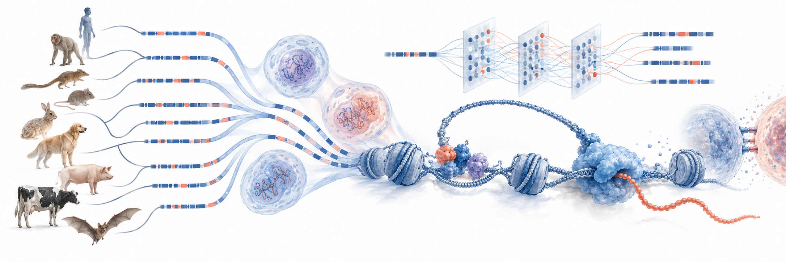

Single-cell genomics and regulatory evolution
Keyong Sun laboratory

We develop single-cell technologies to study how gene regulation shapes cell identity during development, across species and under persistent physiological stress. We build comparative cell atlases and combine deep learning with functional experiments to understand how regulatory changes affect cell function.
Data resources
Compare chromatin accessibility tracks and query ATAC-derived GeneScores across cell types.
Browse data resourcesHuman Chromatin Accessibility Atlas
Cell-type-resolved human chromatin accessibility, with 131 named cell types on the hg38 reference genome.
Tree Shrew Chromatin Accessibility During Organogenesis
TOPA profiles 3,656,332 nuclei from six whole embryos at E23.5, E25.5 and E27.5. It resolves 24 major cell classes and 197 cell types, and defines 1,238,436 candidate cis-regulatory elements.
Research
Single-cell technologies
Developing single-cell RNA-seq, ATAC-seq and CUT&Tag technologies.
Comparative cell atlases
Comparing cell identities and regulatory programs across species, from embryos to adult tissues.
Enhancer evolution
Investigating how enhancer sequences and activities are conserved or diverge across species.
Chronic stress and the epigenome
Understanding how persistent stress remodels the epigenome and influences tissue function.
Immune recognition
Understanding MHC-I–peptide–TCR interactions to guide efforts to reduce therapeutic protein immunogenicity.
Join the lab
We welcome enquiries from researchers interested in single-cell methods, comparative genomics, epigenetics, machine learning and immunology.
Contact and opportunities